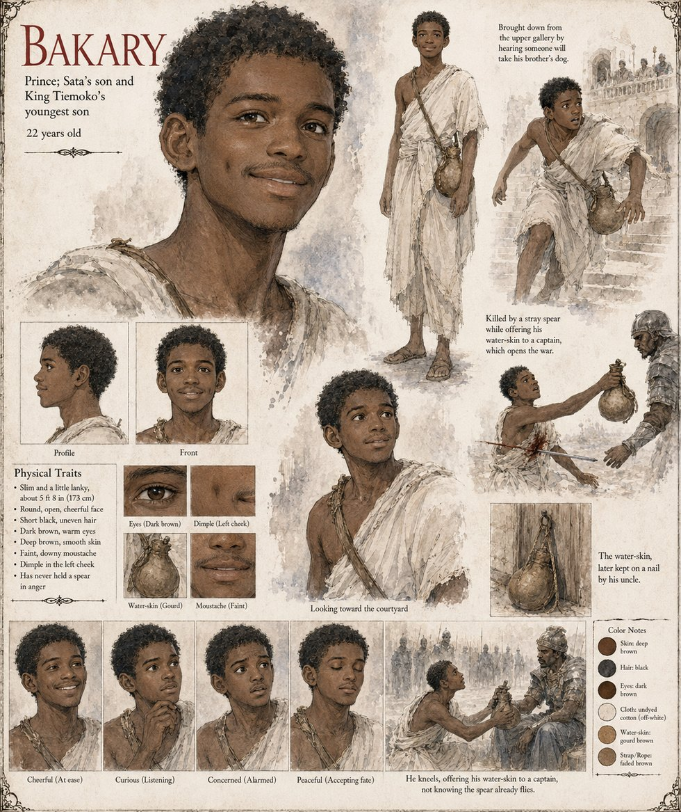

Bakary
Prince, Sata's son, King Tiemoko's youngest · the water-carrier · 22 years old
Sata's son, born fourteen winters after Sekou, the boy who had been born to arrive fourteen years after the rest. On the ninth day of Kerren he is twenty-two, and has never held a spear in anger or been asked to. He comes down from the upper gallery only because he has heard that someone is going to take his brother's dog: Captain Wuro of the palace guard has walked twenty men into the kennel yard, arrested Kolo for sacrilege and taken the dog, on a rope, as evidence. It is a hot dry morning, the wardens have been shouting for an hour, and he has a water-skin over his shoulder, which he is offering to a captain called Mory, who has been shouting longest. A boy on the wall, one of a guard who are nineteen and have not slept, throws a spear at the captain. It misses him by a hand, and hits the water-carrier. Nobody had meant it. That was, afterward, the only part of it anyone could agree on, and it helped no one.
They bring him home across a gate-shutter with the water-skin still on his shoulder. By nightfall there is an open line in the ledger of the dead, and in Danjeri only one thing can be done with an open line. His mother Sata never again eats a meal in company; her brother Sory keeps the water-skin on a nail above his sleeping-mat, and she takes it down for his hanging. Mory, who was among the first to reach the palace gate on the morning Bakary died, is the captain who takes off his cap in the yard when he finds Kolo with the dead dog across his knees. In the Epilogue the Recounters' fourteen lines on the war name the deaths of Bakary, of Alassane and of Sory, in that order.
The manuscript gives his age, his birth order, the water-skin, the offer and the spear, and no face or build. The sheet's slim, slightly lanky 5 ft 8 in (173 cm) build, round open cheerful face, short uneven black hair, warm dark-brown eyes, smooth deep brown skin, faint dimple in the left cheek, faint moustache and gourd water-skin on a faded strap are its own, as are its panels Cheerful (At ease), Curious (Listening), Concerned (Alarmed) and Peaceful (Accepting fate). Its scene, He kneels, offering his water-skin to a captain, not knowing the spear already flies., has him kneeling, which the manuscript does not; its side notes, Killed by a stray spear while offering his water-skin to a captain, which opens the war and The water-skin, later kept on a nail by his uncle, follow it.
“Nobody had meant it.”